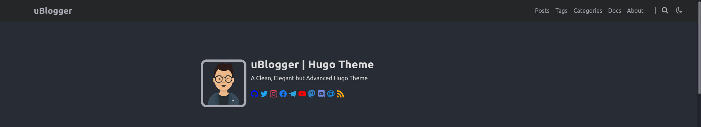

While you code, you should comment and document what you are doing.
Boring, isn’t is?
But it actually helps a future developer, usually you after three days, to understand what you did and to start modifying and integrating your script.
So, dear future me, this is How I Built Your Blog!
Overview
In a previous post I described my thought process while choosing the framework for the website. Now, let’s understand the basics of a hugo website, so we can start blogging right away!
The folder structure of a blank Hugo project looks like this:
blog_bubu/
├── archetypes/
│ └── default.md
├── config.toml
├── content/
│ ├── post1.md
│ └── post2.md
├── data/
├── layouts/
├── public/
├── static/
└── themes/
config.tomlis the brain of the blog, where we will set the title of the website, enable the features we want to use, our social URLs and so on;contentis the folder that will contain the posts or pages we write in Markdown, and that will be rendered in HTML;themesis the folder in which we will download the theme we like, or you can create a completely custom theme with time and knowledge available;layoutsis a folder used to override the files used in the theme previously picked. Like in Jekyll, you have your (my) maybe-it-can-work customization away from a working theme, and you can go back simply deleting its content.publicis the folder with the rendered HTML files.
There is a ton more about Hugo that you can find in the documentation), but I am a huge fan of Pareto principle:
80% consequences from 20% causes.
I used to read too much the documentation of software I needed to use, but I realized I often lost the focus on what was important: using the software rather than knowing the software.
So, my new mantra while approaching new things is to have a mental framework on how things are supposed to work, learn the (not-so-)bare minimum of what is necessary and start doing. Once I need more advanced features, I go back to the documentation and improve/modify my previous knowledge.
This is particularly true in this project: I want a functional blog, without super-fancy things. But, as you will see later, I decided to add functionalities that required a bit of search.
The last piece of theoretical framework we need is how to organize our workspace. We will need two repositories: our main folder blog_bubu with drafts and configs, and the public folder as a separate submodule.
Including the repository of the theme, we will keep track of these three folders:
blog_bubu/ # our main folder called MAIN_REPO
│
..
├── public/ # our submodule called PUBLIC_REPO
└── themes/ # external submodule THEME_REPO
Now, let’s build our first MVB, Minimum Viable Blog!
And if you want to follow along, go and find a theme you like. It might take more than you expect! 😉
Minimum Viable Blog
Set up
Let’s remind ourselves the goal:
a blog hosted on GitHub Pages
https://<yourGitHubUsername>.github.io
and see the list of what we need:
- An empty private GitHub repository for
blog_bubu - Public repository
<yourGitHubUsername>.github.iowith at least 1 commit like an emptyREADME.md(to add it as submodule, not need for GitLab) - A theme, in my case uBlogger. The features I like of this theme are
- Light/Dark mode
- Search Bar
- Minimal design
- The
golanguage installed on you local machine - The
hugoframework - Something we want to share (and the time to write it 🤦)
I assume that you had no problem in completing the first three tasks.
Now let’s install go and hugo. For my operating system, an Ubuntu-like distro, the commands are pretty easy
sudo apt install go-golang
## Uncomment the following line if you don't have HomeBrew installed:
# /bin/bash -c "$(curl -fsSL https://raw.githubusercontent.com/Homebrew/install/HEAD/install.sh)"
brew install hugo
For more information about HomeBrew for Linux, you can find here the documentation.
Tasks completed!
Creating the blog
Now that everything is ready, let’s build the actual blog.
First we need to create our main folder:
hugo new site <site_folder>
Inside <site_folder> you should find the following structure:
.
├── archetypes/
│ └── default.md
├── config.toml
├── content/
├── data/
├── layouts/
├── static/
└── themes/
Now let’s link our private repository with the remote repository:
# we are inside <site_folder>
git init
git remote add origin <MAIN_REPO>.git
git add .
git commit -m "initialized repo"
git push -u origin master
We add the theme now, in my case:
git submodule add https://github.com/upagge/uBlogger.git themes/uBlogger
and finally, we can render our website with hugo server -D and check the output in a browser at the address localhost:1313.
At the moment it is empty. We need to add at least two more things:
- Edit the
config.toml - Add a new post
For the configuration file I started with the theoretical minimum:
baseURL = "https://<YOUR_USERNAME>.github.io"
# [en, zh-cn, fr, ...] determines default content language
defaultContentLanguage = "en"
# language code
languageCode = "en"
title = "Blog Bubu"
# Change the default theme to be use when building the site with Hugo
theme = "uBlogger"
[params]
# uBlogger theme version
version = "2.0.X"
[menu]
[[menu.main]]
identifier = "posts"
# you can add extra information before the name (HTML format is supported), such as icons
pre = ""
# you can add extra information after the name (HTML format is supported), such as icons
post = ""
name = "Posts"
url = "/posts/"
# title will be shown when you hover on this menu link
title = ""
weight = 1
[[menu.main]]
identifier = "about"
pre = ""
post = ""
name = "About"
url = "/About/"
title = ""
weight = 2
# Markup related configuration in Hugo
[markup]
# Syntax Highlighting (https://gohugo.io/content-management/syntax-highlighting)
[markup.highlight]
# false is a necessary configuration
noClasses = false
For the new post, you can use:
hugo new posts/test.md
that will create a file .md in content/posts/ named test.md with this content:
---
title: "Lol"
date: 2021-06-28T22:18:01+02:00
draft: true
---
Of course, you can create the same file in any other way and it works just fine.
You add your content and the you are ready to publish it on GitHub. How?
First you add the PUBLIC_REPO as submodule:
git submodule add -b main <PUBLIC_REPO>.git public
(I am assuming that the repo bubu.github.io has as protected branch main and not master and has at least 1 commit).
Once also this repo is set up, Ryan Schachte has the solution for deploying the website:
#!/bin/sh
# If a command fails then the deploy stops
set -e
printf "\033[0;32mDeploying updates to GitHub...\033[0m\n"
# Build the project.
hugo -t uBlogger # if using a theme, replace with `hugo -t <YOURTHEME>`
# Go To Public folder
cd public
# Add changes to git.
git add .
# Commit changes.
msg="rebuilding site $(date)"
if [ -n "$*" ]; then
msg="$*"
fi
git commit -m "$msg"
# Push source and build repos.
git push origin main
But, J.! You are following the quickstart guide from XYZ…
You are right, Young Padawan!
In fact the linear part stops here!
Not-so-minimal blog
Once I got familiar with the structure of the blog, I decided to add some features:
- the social banner on the homepage, like in the demo

- a search bar;
- a header image for each post;
- and a comment section.
So, to start with something already working, I used the config.toml file
already provided with the theme in the exampleSite/ folder.
First changes
In the first few lines I changed the url and the title of the blog.
I set the enabelGitInfo = false
And, as I said, I wanted the social banner: so I added the username of the various
social platform I have in the section of the configuration file [languages.en.social.params]
So far so good.
Search bar
This theme comes with the support of two search engines (kind of).
Lunr, offline and based on a json file you create with hugo -t uBlogger; and Algolia, which is still unclear to me what is.
Guess what I opted for…
As a remainder for myself, you need this part of the config.toml to generate the json:
[outputs]
home = ["HTML", "RSS", "JSON"]
The (Bruce) Banner
Following the Pareto principle, I had a look at the folder structure of the example site.
The posts with the banner have the following structure: in content/posts/ you create a new folder
2021-07-05 where you put a markdown file index.md. You can do that in Bash or with:
hugo new posts/2021-07-05/index.md
The index.md file has the following preamble:
---
title: "Blogging with Hugo"
date: 2021-07-05T12:10:04+02:00
tags:
- "hugo"
- "how to"
resources:
- name: "featured-image"
src: "name_image.png"
---
Descending order
Something that didn’t come up until I tried to write this post:
the posts in the homepage were in ascending order…
I guess it is because this posts are actually pages for hugo.
In any case, the solution was quite easy at the end. We can exploit the overriding feature of the layouts folder.
I just copied the index.html file from the theme with
cp theme/uBlogger/layout/index.html layouts/index.html
and added the .Reverse instruction to the range $pages.Pages in the {{- /* Posts */ -}} section:
{{- range $pages.Pages.Reverse -}}
Important EDIT
After publishing this post I realised I made a mistake.
By default, hugo orders posts in descending order, but it has to know that your page is actually a post.
To do so, in the header of the post you add:
---
weight: 1
title: ....
since weight = 1 is what you set in the config.toml.
Of course, you have to undo the addition of .Reverse.
Comments
The last thing that I wanted for a functional blog was having comments.
I wasn’t sold to Disquis, because in its dashboard I couldn’t see the comments. Not sure if it is related to using a static website with hugo, or my free plan.
I decided to use Telegram.
The config.toml already has the option to handle comments with Telegram, so I just added my User-ID.
(Not so) minor tweaks
At this point the blog works. I like how it looks, and it seems easy to mantain.
So, we are ok, right?
NO.
What’s wrong with line numbers?!
I don’t like the uBlogger way of highligting codes.
Why aren’t line numbers aligned????
Easy fix in the config.toml
[markup.highlight]
codeFences = true
guessSyntax = true
lineNos = false
lineNumbersInTable = true
noClasses = false
And here’s the difference:
Tabs, tabs everywhere…
One thing I noticed while testing my blog was quite annoying.
Each time I clicked on a post, a new tab opened.
Now, my muscle memory does not appreciate this feature: I want to go back to the previous page with my mouse or shortcuts, and, if I am on a new tab, I don’t have a previous page.
Moreover I plan to add several posts here. Imagine looking for something, and each time a new tab…
After a bit of JFGI (see this old post for reference), here’s the solution:
cp theme/uBlogger/layouts/summary.html layouts/summary.html
and remove the target="_blank", which enables the opening of a new tab.
Getting posts done
Everything is set up. But the difficult part starts now.
Writing this post took ages, but I really enjoyed it. I have also a lot of ideas and things I like I want to share.
The system is to write two posts per month. It seams reasonable for a person who usually doesn’t like writing.
So, let’s see in the next post!
#tantecarecose
Bonus track: GitLab version
In order to host a hugo website on GitLab, you don’t need the public folder as a submodule.
You add the .gitlab-ci.yml file in your main repository, with the following content:
image: registry.gitlab.com/pages/hugo:latest
variables:
GIT_SUBMODULE_STRATEGY: recursive
pages:
script:
- hugo
artifacts:
paths:
- public
only:
- master
Once you push a new commit, GitLab will launch a job that will create the blog and post it online.
The building time is negligible with respect to the Jekyll version.
Комментарии